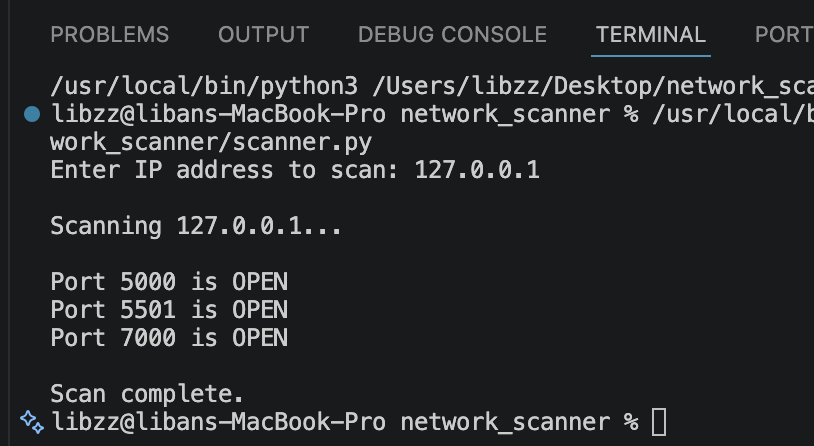

Port Scanner
A Python-based port scanner that scans ports 1-1000 on a target IP address and identifies which ports are open. This project was created to develop my understanding of networking, TCP/IP communication, and Python socket programming.

Technologies Used
- Python
- TCP/IP Networking
- Cybersecurity
- Port Scanning
Features
- Port scanning 1-1000
- Detect open ports
- User-defined target IP address
- Show results in the terminal
Future Improvements
- Custom port ranges
- Faster scanning with multithreading
- Export scan results to a file
- Hostname resolution